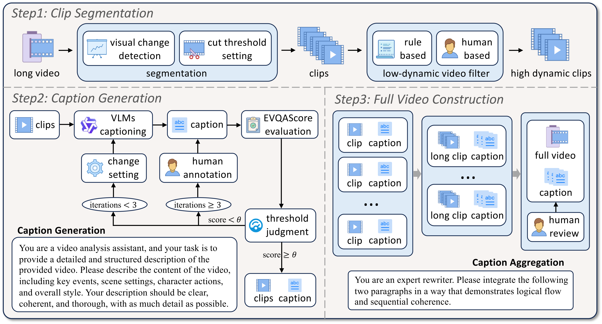
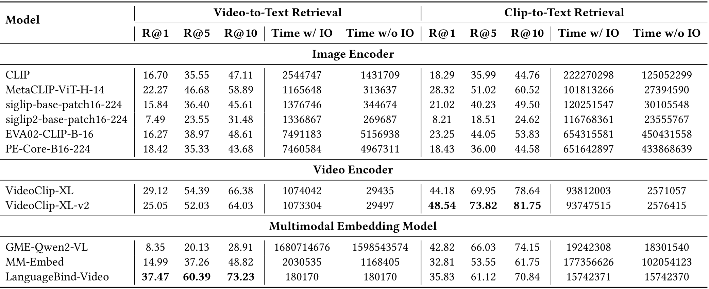

Long videos contain a vast amount of information, making video-text retrieval an essential and challenging task in multimodal learning and web-scale search. On today's Web, where users increasingly expect to locate not only relevant pages but also specific long videos or fine-grained clips, existing benchmarks fall short due to limited video duration, low-quality captions, and coarse annotation granularity.
To address these limitations, we introduce LoVR, a benchmark specifically designed for long video-text retrieval. LoVR contains 467 long videos and over 40,804 fine-grained clips with high-quality captions. To overcome the issue of poor machine-generated annotations, we propose an efficient caption generation framework that integrates VLM automatic generation, caption quality scoring, and dynamic refinement. This pipeline improves annotation accuracy while maintaining scalability. Furthermore, we introduce a semantic fusion method to generate coherent full-video captions without losing important contextual information.
Our benchmark introduces longer videos, more detailed captions, and a larger-scale dataset, presenting new challenges for video understanding and retrieval. Extensive experiments on various advanced models demonstrate that LoVR is challenging, revealing the limitations of current approaches and providing valuable insights for future research.
🌟 LoVR is a novel benchmark specifically designed for long video-text retrieval, addressing key limitations in existing datasets such as short video duration, low-quality captions, and insufficient annotation granularity.
Overview of the data construction pipeline in LoVR. Step 1 segments long videos into high-dynamic clips. Step 2 generates high-quality clip-level captions via iterative VLM captioning. Step 3 constructs long-video captions by clustering and summarizing clip captions.
📊 Key Features:
Baseline performance of text-to-video and text-to-clip retrieval on the LoVR benchmark.

Baseline performance of video-to-text and clip-to-text retrieval on the LoVR benchmark.
@article{cai2025lovr,
title={LoVR: A Benchmark for Long Video Retrieval in Multimodal Contexts},
author={Cai, Qifeng and Liang, Hao and Dong, Hejun and Qiang, Meiyi and An, Ruichuan and Han, Zhaoyang and Zhu, Zhengzhou and Cui, Bin and Zhang, Wentao},
journal={arXiv preprint arXiv:2505.13928},
year={2025}
}